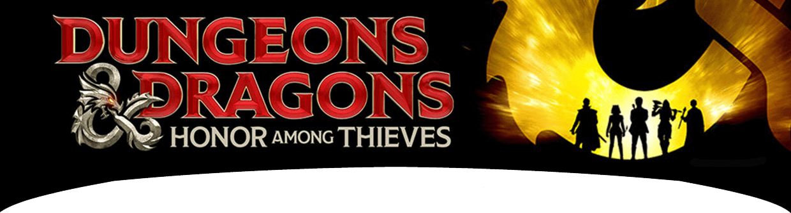
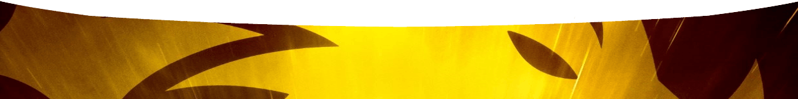

Пять вопросов мертвецу,
или глубокое погружение в фильм
«Подземелья и Драконы: Честь среди воров»
Пространство «Дебри» продолжает путешествие по загадочным лабиринтам «Dungeons & Dragons», в котором нам вновь помогает историк, религиовед, автор цикла статей о ролевых играх для Большой Российской Энциклопедии – и, по совместительству, игрок D&D с тридцатилетним стажем – Василий Чернов.
Как вы уже знаете, D&D – первая и до сих пор самая популярная ролевая игра в мире. Она появилась в 1974 году и с тех пор выросла в огромную творческую среду, из которой рождаются произведения литературы, живописи, кинематографа, игровой и телевизионной индустрии. Огромному числу людей эта игра помогла лучше узнать себя, внутренне раскрыться, найти себе хобби и новых друзей.
Этой весной студия «Paramount Pictures» выпустила улётную экшен-комедию Дж. Голдштейна и Дж. Ф. Дейли «Подземелья и Драконы: Честь среди воров», действие которой разворачивается в «Забытых королевствах» – самом известном сеттинге D&D. Мировая премьера прошла в марте на фестивале популярных искусств «South by Southwest», и к настоящему времени фильм получил рейтинг 91% на «Rotten Tomatoes».
Среди русскоязычной аудитории, однако, этот блестящий фильм пошел с некоторым скрипом, ведь здесь D&D не является настолько неотъемлемой частью культуры, как в США. А «Честь среди воров» отсылает зрителя именно к культуре, ведь этот фильм, по большом счету – не столько приключенческий экшен, сколько добрая сатира над самим игровым процессом D&D – механикой, арифметикой, приколами и условностями этой игры.
Хотите расширить свои культурные горизонты? Узнать, почему мертвецу задают именно пять вопросов, чем чародей отличается от волшебника, кто такой совомед, и почему жизнь красивой девушки может сильно осложняться рогами на ее голове?
Если да, то приходите в субботу 20 мая 2023 года в 14:00 в пространство «Дебри» (лекторий благотворительного фонда «Предание») по адресу Москва, ул. Дербеневская 14 кор. 3. Мы вместе посмотрим «Честь среди воров», а Василий Чернов поможет понять этот фильм лучше. Вход за донат!
